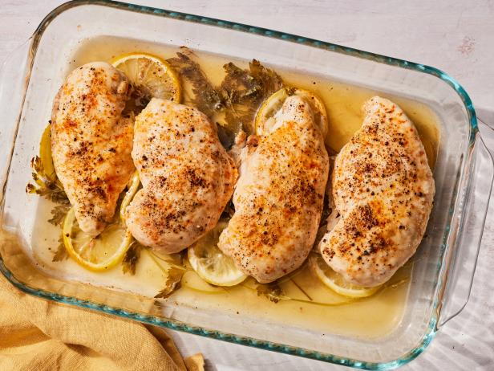

Baked Chicken Breast

Classic Baked Chicken Breast
You need protien to build strong muscles. What simpler way to get it than some classic Baked chicken tits. Meat Monkey D. Luffy would swoon over.
Ingredients
- 4 skinless, boneless chicken breast halves
- 2 Tbsp Olive Oil
- Creole Seasoning to taste
- 1 Tbsp Chicken Broth
Directions
- Gather ingredients
- Preheat oven to 400 degrees
- Rub chicken with oil, sprinkle salt and creole. PLace in broiler pan
- Bake 10 minutes, flip, bake about 15 minutes more or until 165 degrees inside